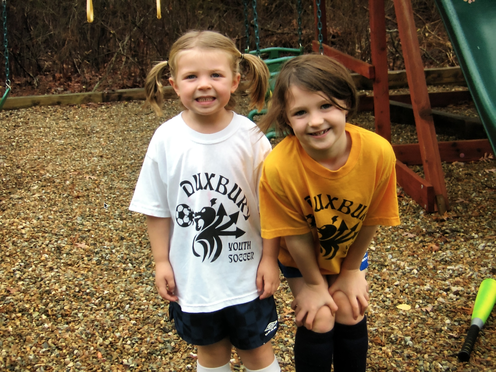
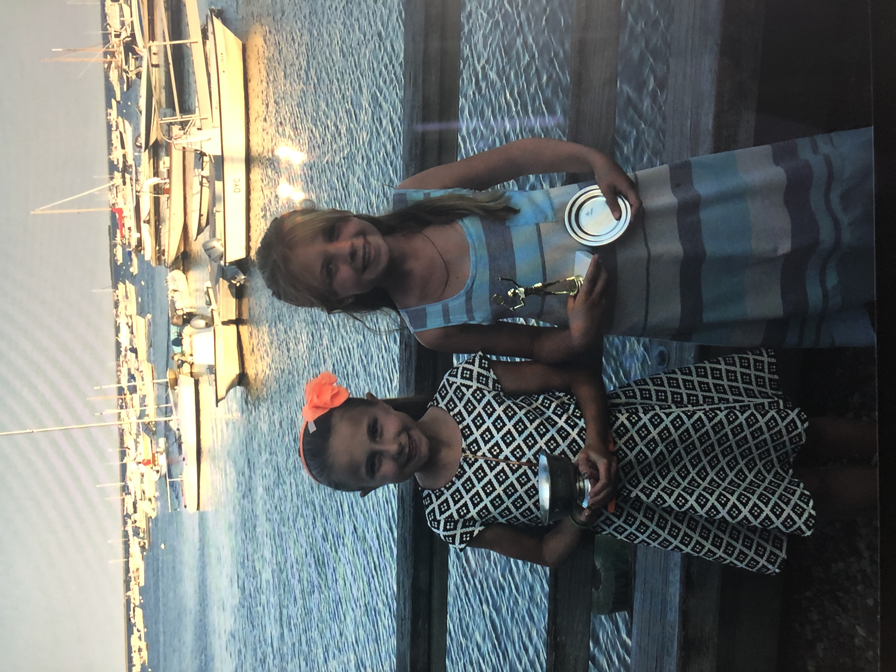
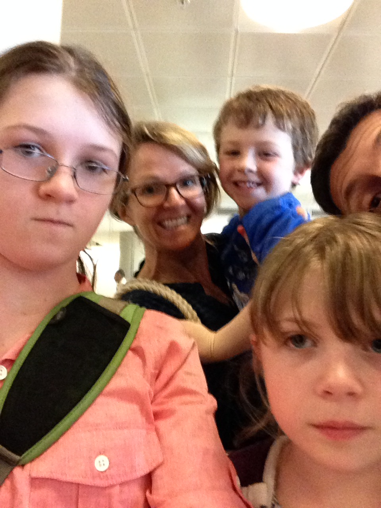
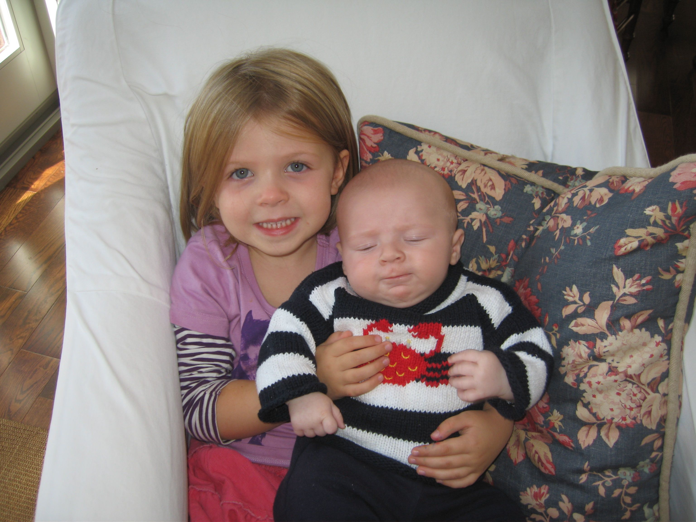

Childhood
"the canvas on which the rest of our life is painted."
My formative years, I remember many series of colorful memories, woven together by each member of my family—especially my older sister, who was at times my arch-nemesis and others my closest confidante. I look back on my childhood quite fondly, remembering the days spent barefoot on the beach, tending to our cheeky chickens, and curling up with my corgi, Lizzie. Now, Lizzie was a character in her own right—a snobbish little thing, to say the least. She'd only tolerate affection on her terms. If you dared to love her a little too much, she'd simply march away, her little butt swinging with disdain. We were little adventurers, sometimes a bit too daring for our own good. I, the classic middle child, had a firecracker spirit and a mind of my own—always in my own world, often caught in that delightful dance between rebellion and wonder. Though the years have passed, I'm certain my inner child has never strayed too far. I can still hear her giggles when I'm with the friends and family from that chapter of my life, as if time has a way of keeping us young. From my siblings, I learned to lead with kindness, listen with care, and—perhaps most importantly—how to be a little mischievous when the moment calls for it. From my mom and dad, I learned more than I ever realized—though at the time, I was blissfully oblivious. At this point in my life, they were both my opposition, the enemy that forced me to eat broccoli and get off of the computer. As a child, you tend to see your parents as these all-knowing creatures who exist solely to cater to your every need. Their lives before you? A mystery. Their world outside of you? Barely worth a second glance. It's as though, in your young eyes, they never existed before you—or perhaps, in a strange twist of childhood logic, you are the reason they exist at all. The thought of them having lives, dreams, or secrets beyond your little orbit is just... unfathomable. Little did I know that I would become a mosaic of both of them. And from Sophia Fawcett? Well, she taught me what it truly means to be a loyal and loving friend. We were girls together, playing in the woods with our barbies, doing circles around her driveway on our razor scooters, and dominating the political landscape of the kindergarten playground. And then there were the sleepless sleepover nights, when time seemed to bend and stretch into the early hours, filled with whispered secrets and fits of giggles over our own silly inside jokes that no one else could ever quite understand. It was the kind of friendship that felt like magic—always easy, always full of joy. My childhood wasn't perfect, but it was wonderfully mine—full of the kind of magic that only youth can hold. I've grown, of course, but something of that little adventurer still lingers inside me, guiding the way I move through the world. The adventure, it seems, never really ends—it just evolves.








